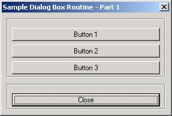
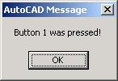
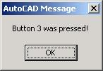

<html>


<!-- Mirrored from www.jefferypsanders.com/autolisp_DCL_Part1.html by HTTrack Website Copier/3.x [XR&CO'2004], Thu, 23 Sep 2004 01:08:04 GMT -->
<head>
<meta name="description" content="AutoLisp Dialog Control Language">
<meta name="GENERATOR" content="Microsoft FrontPage 5.0">
<meta name="keywords" content="autolisp, DCL, dialog, control, language">
<title>Part 1 - Buttons</title>
</head>

<body>

</body>

</html>
<p align="center"><font color="#000000"><big><big><big><strong>The AutoLisp Tutorial - DCL</strong></big></big></big></font><font face="Helvetica"></p>
    </font><p align="center"><font color="#000000"><big><big><strong>Dialog Control Language -
    Part 1</strong></big></big></font></p>
    <hr size="4" color="#0000FF">
    <p>&nbsp; <big><strong>Part 1 - Buttons</strong></big>&nbsp;&nbsp; </p>
    <hr size="4" color="#0000FF">
    <p>&nbsp;&nbsp; Let's build a working DCL file showing us exactly how to handle buttons. </p>
    <p>&nbsp;We will build a DCL file containing three buttons plus a Close [ Cancel ] &nbsp;
    button.&nbsp; Each of the three buttons will display a message when pressed.</p>
    <hr size="4" color="#0000FF">
    <p>&nbsp; <strong>Layout thoughts:&nbsp;</strong>&nbsp; I will place the buttons in a
    column, (stacked on top of each other).&nbsp; Then I'll put the Close button at the bottom
    on a row of it's own.&nbsp; So...I'll need something like this:</p>
    <p><font face="Courier New">: column { <br>
    &nbsp; : boxed_column { <br>
    &nbsp;&nbsp;&nbsp; : button { <br>
    &nbsp;&nbsp;&nbsp;&nbsp;&nbsp; <font color="#FF0000">// Put code for button 1 here</font><br>
    &nbsp;&nbsp;&nbsp; }&nbsp; <br>
    &nbsp;&nbsp;&nbsp; : button {&nbsp; ]<br>
    &nbsp;&nbsp;&nbsp;&nbsp;&nbsp;&nbsp;<font color="#FF0000">// Put code for button 2 here</font>&nbsp;
    <br>
    &nbsp;&nbsp;&nbsp; }&nbsp; <br>
    &nbsp;&nbsp;&nbsp; : button {&nbsp; ]<br>
    &nbsp;&nbsp;&nbsp;&nbsp;&nbsp;&nbsp;<font color="#FF0000">// Put code for button 3 here</font>&nbsp;
    <br>
    &nbsp;&nbsp;&nbsp; }&nbsp; <br>
    &nbsp; }&nbsp; <br>
    &nbsp; : boxed_row { <br>
    &nbsp;&nbsp;&nbsp; : button { </font><br>
    <font face="Courier New">&nbsp;&nbsp;&nbsp;&nbsp;&nbsp;&nbsp; <font color="#FF0000">// Put
    code for the Close button here</font><br>
    &nbsp;&nbsp;&nbsp; } <br>
    &nbsp; }&nbsp;&nbsp; <br>
    } </font></p>
    <hr size="4" color="#0000FF">
    <p>Let's copy in the code for the header and all of the controls above.&nbsp; I'll show
    them in red.&nbsp; Notice the key names and labels had to be changed.</p>
    <p><font color="#FF0000"><font face="Courier New">SAMPLE1 : dialog { <br>
    &nbsp;&nbsp;&nbsp;&nbsp;&nbsp; &nbsp;&nbsp;&nbsp; label = &quot;Sample Dialog Box Routine
    - Part 1&quot;;</font> </font><br>
    <font face="Courier New">&nbsp;&nbsp;&nbsp;&nbsp;&nbsp;&nbsp; &nbsp;&nbsp; : column { <br>
    &nbsp;&nbsp;&nbsp;&nbsp;&nbsp;&nbsp; &nbsp;&nbsp; &nbsp; : boxed_column { <br>
    &nbsp;&nbsp;&nbsp;&nbsp;&nbsp;&nbsp; &nbsp;&nbsp;&nbsp;&nbsp;&nbsp;&nbsp; : button {<br>
    <font color="#FF0000">&nbsp;&nbsp;&nbsp;&nbsp;&nbsp;&nbsp;
    &nbsp;&nbsp;&nbsp;&nbsp;&nbsp;&nbsp;&nbsp;&nbsp; key = &quot;but1&quot;;<br>
    &nbsp;&nbsp;&nbsp;&nbsp;&nbsp;&nbsp; &nbsp;&nbsp;&nbsp;&nbsp;&nbsp;&nbsp;&nbsp;&nbsp;
    label = &quot;Button 1&quot;;<br>
    &nbsp;&nbsp;&nbsp;&nbsp;&nbsp;&nbsp; &nbsp;&nbsp;&nbsp;&nbsp;&nbsp;&nbsp;&nbsp;&nbsp;
    is_default = false;</font><br>
    &nbsp;&nbsp;&nbsp;&nbsp;&nbsp;&nbsp; &nbsp;&nbsp;&nbsp;&nbsp;&nbsp;&nbsp; }<br>
    &nbsp;&nbsp;&nbsp;&nbsp;&nbsp;&nbsp; &nbsp;&nbsp;&nbsp;&nbsp;&nbsp;&nbsp; : button {<br>
    <font color="#FF0000">&nbsp;&nbsp;&nbsp;&nbsp;&nbsp;&nbsp;
    &nbsp;&nbsp;&nbsp;&nbsp;&nbsp;&nbsp;&nbsp;&nbsp; key = &quot;but2&quot;;<br>
    &nbsp;&nbsp;&nbsp;&nbsp;&nbsp;&nbsp; &nbsp;&nbsp;&nbsp;&nbsp;&nbsp;&nbsp;&nbsp;&nbsp;
    label = &quot;Button 2&quot;;<br>
    &nbsp;&nbsp;&nbsp;&nbsp;&nbsp;&nbsp; &nbsp;&nbsp;&nbsp;&nbsp;&nbsp;&nbsp;&nbsp;&nbsp;
    is_default = false;</font><br>
    &nbsp;&nbsp;&nbsp;&nbsp;&nbsp;&nbsp; &nbsp;&nbsp;&nbsp;&nbsp;&nbsp;&nbsp; }<br>
    &nbsp;&nbsp;&nbsp;&nbsp;&nbsp;&nbsp; &nbsp;&nbsp;&nbsp;&nbsp;&nbsp;&nbsp; : button {<br>
    <font color="#FF0000">&nbsp;&nbsp;&nbsp;&nbsp;&nbsp;&nbsp;
    &nbsp;&nbsp;&nbsp;&nbsp;&nbsp;&nbsp;&nbsp;&nbsp; key = &quot;but3&quot;;<br>
    &nbsp;&nbsp;&nbsp;&nbsp;&nbsp;&nbsp; &nbsp;&nbsp;&nbsp;&nbsp;&nbsp;&nbsp;&nbsp;&nbsp;
    label = &quot;Button 3&quot;;<br>
    &nbsp;&nbsp;&nbsp;&nbsp;&nbsp;&nbsp; &nbsp;&nbsp;&nbsp;&nbsp;&nbsp;&nbsp;&nbsp;&nbsp;
    is_default = false;</font><br>
    &nbsp;&nbsp;&nbsp;&nbsp;&nbsp;&nbsp; &nbsp;&nbsp;&nbsp;&nbsp;&nbsp;&nbsp; }<br>
    &nbsp;&nbsp;&nbsp;&nbsp;&nbsp;&nbsp; &nbsp;&nbsp;&nbsp;&nbsp; }<br>
    &nbsp;&nbsp;&nbsp;&nbsp;&nbsp;&nbsp; &nbsp;&nbsp; &nbsp; : boxed_row { <br>
    &nbsp;&nbsp;&nbsp;&nbsp;&nbsp;&nbsp; &nbsp;&nbsp;&nbsp;&nbsp;&nbsp;&nbsp; : button {<br>
    <font color="#FF0000">&nbsp;&nbsp;&nbsp;&nbsp;&nbsp;&nbsp;
    &nbsp;&nbsp;&nbsp;&nbsp;&nbsp;&nbsp;&nbsp;&nbsp; key = &quot;cancel&quot;;<br>
    &nbsp;&nbsp;&nbsp;&nbsp;&nbsp;&nbsp; &nbsp;&nbsp;&nbsp;&nbsp;&nbsp;&nbsp;&nbsp;&nbsp;
    label = &quot;Close&quot;;<br>
    &nbsp;&nbsp;&nbsp;&nbsp;&nbsp;&nbsp; &nbsp;&nbsp;&nbsp;&nbsp;&nbsp;&nbsp;&nbsp;&nbsp;
    is_default = true;<br>
    &nbsp;&nbsp;&nbsp;&nbsp;&nbsp;&nbsp; &nbsp;&nbsp;&nbsp;&nbsp;&nbsp;&nbsp;&nbsp;&nbsp;
    is_cancel = true;</font><br>
    &nbsp;&nbsp;&nbsp;&nbsp;&nbsp;&nbsp; &nbsp;&nbsp;&nbsp;&nbsp;&nbsp;&nbsp; } <br>
    &nbsp;&nbsp;&nbsp;&nbsp;&nbsp;&nbsp; &nbsp;&nbsp;&nbsp;&nbsp; }&nbsp;&nbsp; <br>
    &nbsp;&nbsp;&nbsp;&nbsp;&nbsp;&nbsp; &nbsp;&nbsp; } </font></p>
    <p><font face="Courier New">}</font></p>
    <p><strong>Right click and copy the above. Open NotePad and paste it.&nbsp; Save the file
    as SAMPLE1.DCL&nbsp; <em>Be sure to change the &quot;Save as Type&quot; drop down box to
    &quot;All Files&quot; before saving it or it will put a&nbsp; &quot;.txt&quot; extension
    on the file name.&nbsp; Save this file somewhere in the AutoCAD search path.</em></strong></p>
    <hr size="4" color="#0000FF">
    <p>&nbsp; Next we will get a copy of the AutoLisp model and revise it.&nbsp; All new code
    is shown in red.</p>
    <p><small><font face="Courier New">(defun C:<font color="#FF0000">SAMPLE1</font>()<br>
    <br>
    &nbsp; ;;;--- Load the dcl file<br>
    &nbsp; (setq dcl_id (load_dialog &quot;<font color="#FF0000">SAMPLE1</font>.dcl&quot;))<br>
    <br>
    &nbsp; ;;;--- Load the dialog definition if it is not already loaded<br>
    &nbsp; (if (not (new_dialog &quot;<font color="#FF0000">SAMPLE1</font>&quot; dcl_id) )
    (exit))<br>
    <br>
    &nbsp; ;;;--- If an action event occurs, do this function<br>
    &nbsp; (action_tile &quot;cancel&quot; &quot;(done_dialog)&quot;)<br>
    <br>
    &nbsp; ;;;--- Display the dialog box<br>
    &nbsp; (start_dialog)</font></small></p>
    <p><small><font face="Courier New">&nbsp; ;;;--- Unload the dialog box<br>
    &nbsp; (unload_dialog dcl_id)<br>
    <br>
    &nbsp; ;;;--- Suppress the last echo for a clean exit<br>
    &nbsp; (princ)<br>
    <br>
    ) </font></small></p>
    <p>&nbsp; I removed several lines from the model.&nbsp; I took out the part that checked
    to see if we hit the Cancel or Okay buttons.&nbsp; We don't need either in this program.
    &nbsp; I also removed the action tile for the okay button and removed &quot;(setq ddiag
    1)&quot; from the cancel button.</p>
    <p><strong>Right click and copy the above. Open NotePad and paste it.&nbsp; Save the file
    as SAMPLE1.LSP&nbsp; <em>Be sure to change the &quot;Save as Type&quot; drop down box to
    &quot;All Files&quot; before saving it or it will put a&nbsp; &quot;.txt&quot; extension
    on the file name.&nbsp; Save this file somewhere in the AutoCAD search path.</em></strong></p>
    <hr size="4" color="#0000FF">
    <p>&nbsp; Let's load the program and see what the DCL file looks like.&nbsp; On the
    command line type this:</p>
    <p>Command: (load &quot;sample1&quot;) and press enter</p>
    <p>&nbsp; You should see this</p>
    <p>C:Sample1 <br>
    Command:</p>
    <p>&nbsp; Now type Sample1 and press enter.&nbsp; If everything went according to plan you
    should see this on your screen:</p>
    <p>&nbsp;</p>
    <p align="center">
    </p>
    <hr size="4" color="#0000FF">
    <p>&nbsp;&nbsp; The buttons do not work yet.&nbsp; Except for the close button.&nbsp; It
    should work fine.&nbsp; We need to add the function to print three different messages when
    the user presses each button.&nbsp;&nbsp; Let's send a parameter to the function to decide
    which message to display. &nbsp; If the parameter equals 1 we will print the first
    message.&nbsp; If 2 then print the second message.&nbsp; If 3 print the third
    message.&nbsp; Something like this:</p>
    <p><small><font face="Courier New">(defun doButton(a)<br>
    &nbsp; (cond<br>
    &nbsp;&nbsp;&nbsp; ((= a 1)(alert &quot;Button 1 was pressed!&quot;))<br>
    &nbsp;&nbsp;&nbsp; ((= a 2)(alert &quot;Button 2 was pressed!&quot;))<br>
    &nbsp;&nbsp;&nbsp; ((= a 3)(alert &quot;Button 3 was pressed!&quot;))<br>
    &nbsp; )<br>
    )</font></small></p>
    <p>&nbsp; Now we need to add the action calls for each of the buttons:</p>
    <p><small><font face="Courier New" color="#000000">&nbsp; (action_tile &quot;but1&quot;
    &quot;(doButton 1)&quot;)<br>
    &nbsp; (action_tile &quot;but2&quot; &quot;(doButton 2)&quot;) </font></small><br>
    <font face="Courier New" color="#000000"><small>&nbsp; (action_tile &quot;but3&quot;
    &quot;(doButton 3)&quot;) <br>
    </small></font></p>
    <p>&nbsp; This will send a parameter of 1,2, or 3 to the doButton function depending on
    which button is pressed.</p>
    <hr size="4" color="#0000FF">
    <p><font face="Courier New">&nbsp; </font>Let's add the doButton function and the action
    calls to the autolisp program.&nbsp; It should look like this:</p>
    <p align="left"><small><font face="Courier New"><font color="#FF0000">(defun doButton(a)<br>
    &nbsp; (cond<br>
    &nbsp;&nbsp;&nbsp; ((= a 1)(alert &quot;Button 1 was pressed!&quot;))<br>
    &nbsp;&nbsp;&nbsp; ((= a 2)(alert &quot;Button 2 was pressed!&quot;))<br>
    &nbsp;&nbsp;&nbsp; ((= a 3)(alert &quot;Button 3 was pressed!&quot;))<br>
    &nbsp; )<br>
    )</font><br>
    <br>
    (defun C:SAMPLE1()<br>
    <br>
    &nbsp; ;;;--- Load the dcl file<br>
    &nbsp; (setq dcl_id (load_dialog &quot;SAMPLE1.dcl&quot;))<br>
    <br>
    &nbsp; ;;;--- Load the dialog definition if it is not already loaded<br>
    &nbsp; (if (not (new_dialog &quot;SAMPLE1&quot; dcl_id) ) (exit))<br>
    <br>
    &nbsp; ;;;--- If an action event occurs, do this function<br>
    &nbsp; <font color="#FF0000">(action_tile &quot;but1&quot; &quot;(doButton 1)&quot;)<br>
    &nbsp; (action_tile &quot;but2&quot; &quot;(doButton 2)&quot;)<br>
    &nbsp; (action_tile &quot;but3&quot; &quot;(doButton 3)&quot;)</font><br>
    &nbsp; (action_tile &quot;cancel&quot; &quot;(done_dialog)&quot;)<br>
    <br>
    &nbsp; ;;;--- Display the dialog box<br>
    &nbsp; (start_dialog)<br>
    <br>
    &nbsp; ;;;--- Unload the dialog box<br>
    &nbsp; (unload_dialog dcl_id)<br>
    <br>
    &nbsp; ;;;--- Suppress the last echo for a clean exit<br>
    &nbsp; (princ)<br>
    <br>
    )</font></small></p>
    <hr size="4" color="#0000FF">
    <p><font color="#000000">Save it and test it out. &nbsp; Everything working okay?</font></p>
    <p align="center">
    
    &nbsp;&nbsp; 
    &nbsp;&nbsp; 
    </p>
    <hr size="4" color="#0000FF">
    <p><font color="#000000">&nbsp; </font></p>
    <p>&nbsp; When you get your program tested and everything is working, move the blue line
    above, [ <font color="#0000FF" face="Courier New"><small>(defun C:SAMPLE1()</small></font>
    ] all the way to the top of the file.&nbsp; This will make all of your variables local and
    will reset them all to nil when the program ends.</p>
    <p>&nbsp; That's it.&nbsp; We're done.</p>
    <p align="center"><a href="autolisp_DCL.html">Back</a></p>
    <hr size="4" color="#0000FF">
    <p align="center"><a href="index.html">AutoLisp Tutorial Home</a></p>
    
